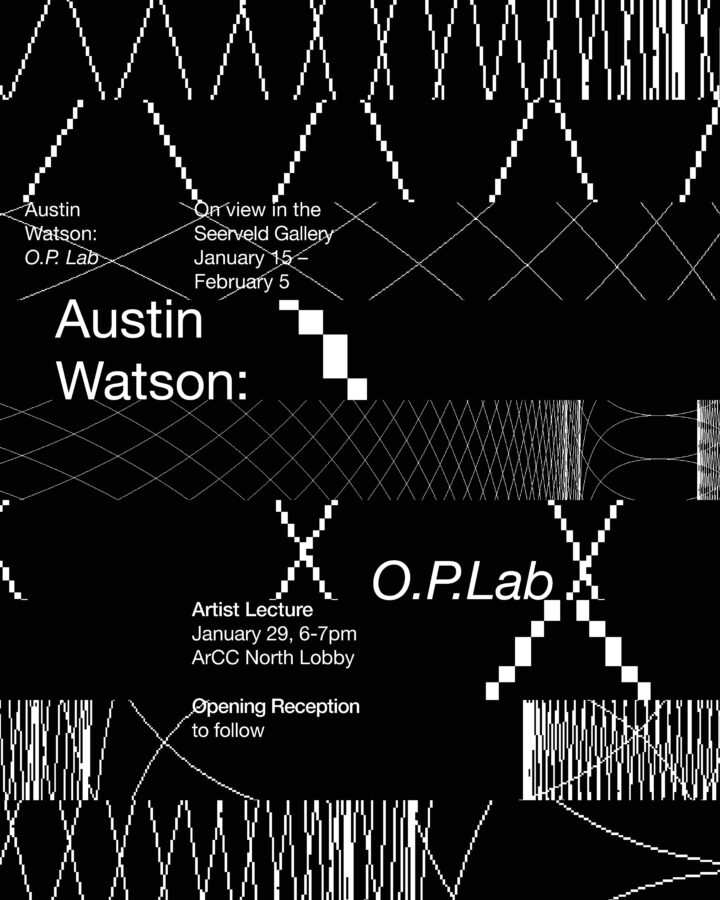

Austin Watson: O.P. Lab
The Seerveld Gallery 25′-26′ Lecture Series welcomes Chicago graphic designer Austin Watson on January 29 from 6-7 pm, followed by the reception of his exhibition O.P. Lab at Trinity’s Seerveld Gallery.
Austin Watson is a multidisciplinary designer and educator whose work pays special attention to design tools and interactive typography. He specializes in typography-driven branding, motion, and interactive design projects that blend analog craft with digital innovation. More about Watson’s work can be found at austinwatson.xyz.
For more information, contact Seerveld Gallery Coordinator, Raeann Van Zee, at rvanzee@trnty.edu